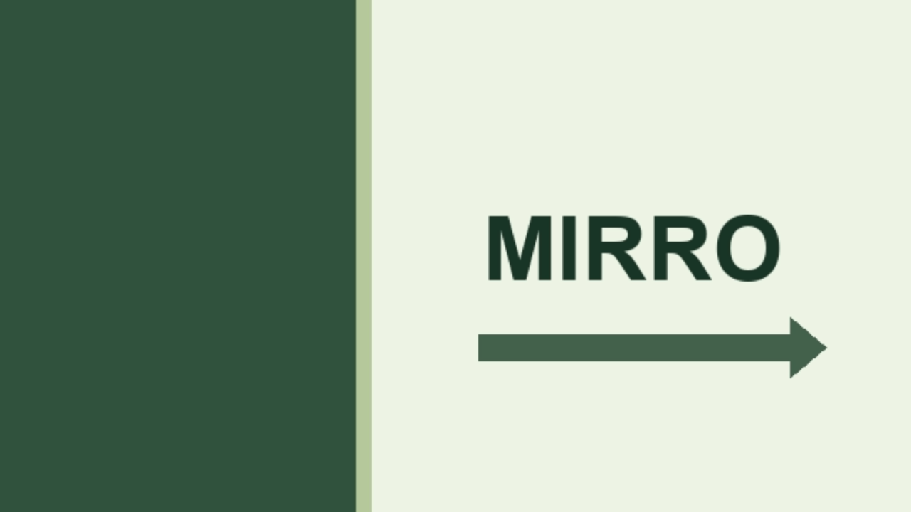
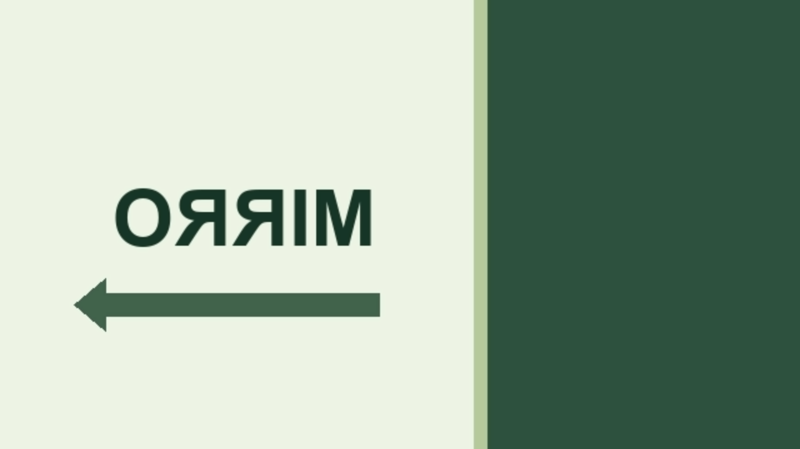
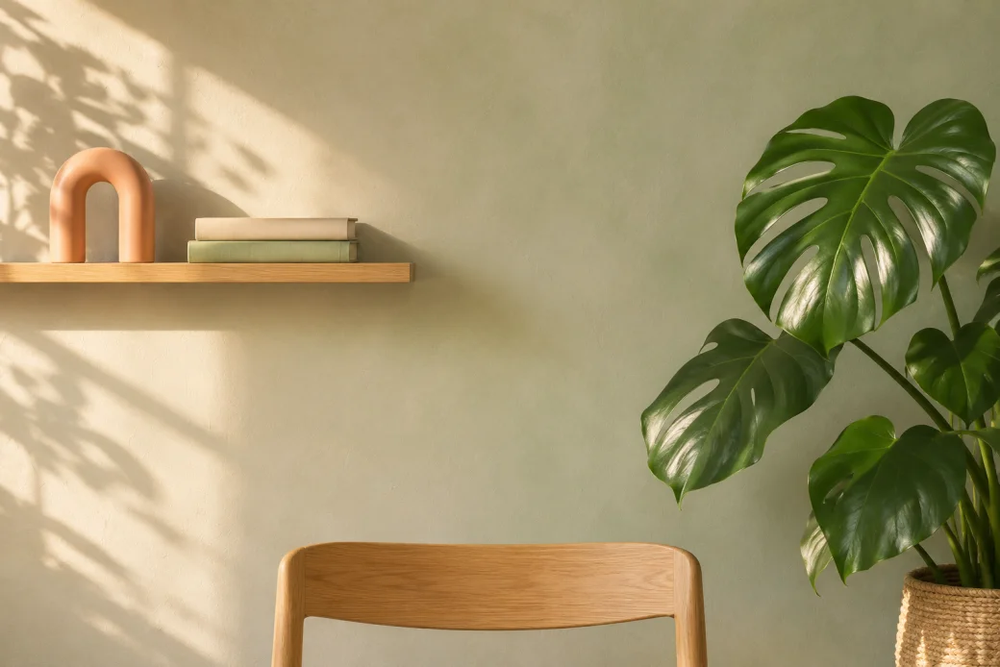

Mirror your feed
Flip the actual feed horizontally. Your meeting app can still mirror its local preview independently.
Flip the video other people see in Google Meet and Microsoft Teams on the web. Add a live effect whenever it fits.
Download for ChromeThe outgoing sample is flipped horizontally.
Free and open source Runs locally in Chrome
Mirro changes the camera feed you send. Switch on mirroring for your whole call or drop in an effect for a moment.


Flip the actual feed horizontally. Your meeting app can still mirror its local preview independently.
Twin Mode reflects half your feed. Confetti adds a quick burst, and Approved drops a stamp on the video.

Capture an empty frame of your room. Click Snap or arm Swipe to snap to dissolve into that frame. Hit Return to come back live.
Desktop Chrome 111 or later
Unzip the download into a folder you can keep.
Open this address in Chrome and turn on Developer mode.
chrome://extensions
Select the extracted ChromeExtension folder, then refresh your Meet or Teams tab. Keep using your regular camera.
Mirro changes video frames locally. Chrome saves your mirror preference, the room image stays in the meeting tab, and your meeting app handles your microphone.